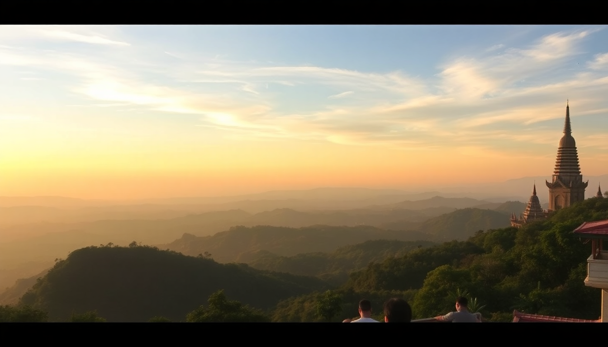

Best Day Trips from Chiang Mai: Doi Suthep & Ethical Sanctuaries

I spent a month based in Chiang Mai’s Old City, and every time I thought I’d seen it all, a half-day drive revealed something completely different. The real magic of northern Thailand isn’t just in the night markets or temple-filled moat — it’s in the mountains, waterfalls, and sanctuaries that ring the city. Here’s what I actually did, what I’d skip, and how to plan your own day trips without wasting time or money.
Is Doi Suthep worth the hype and how do you get there?
Yes, but go early. Doi Suthep is the golden temple perched on a mountain just outside Chiang Mai, and it’s popular for a reason. The 306-step naga staircase is iconic, but the real draw is the 360-degree view of the city below — smoggy in March, crystal-clear in December. I took a red songthaew (shared taxi) from the Old City’s Thapae Gate for 60 baht per person. The ride up is a winding 30-minute affair that’ll test your breakfast, but the payoff is immediate.
- Temple entry: 30 baht for Thais, 50 baht for foreigners (cash only)
- Songthaew from Old City: 60 baht one-way per person; negotiate for round-trip
- Cable car: 20 baht if you’d rather skip the stairs
- Best time: 7:00 AM to beat crowds and heat; the monks’ morning chanting starts around 8:00
If you’re short on time, combine Doi Suthep with the nearby Bhubing Palace rose gardens and the Hmong hill-tribe village Doi Pui — all three sit on the same road. I’d skip the palace unless you love manicured hedges. Doi Pui’s market sells decent coffee and handwoven textiles, but haggle.
Which elephant sanctuaries are actually ethical?
This is the one trip where cheap should scare you. I visited Elephant Nature Park in Mae Rim, about an hour north of Chiang Mai. It’s the most established sanctuary in the region, founded by Lek Chailert, and they do not allow riding, bathing, or any hands-on interaction. You watch, feed, and walk alongside the elephants on their terms. A day visit costs around 2,500 baht including pickup, lunch, and a guide — and it’s worth every baht.
- Elephant Nature Park (Mae Rim): No riding, no hooks, ethical rescue focus — book weeks ahead
- Elephant Jungle Sanctuary (multiple locations): Mixed reviews; some locations allow bathing, which conservationists now discourage
- Red flags for unethical places: Chains, hooks, painted elephants, rides in baskets, “circus” tricks
- What to bring: Closed-toe shoes, long pants, sunscreen, and a refillable water bottle
I also did a half-day visit to Elephant Freedom Project in Mae Wang, which is smaller and more intimate — just three elephants and a family-run operation. It felt less commercial than the big parks, but the facilities are basic. Either way, avoid any place that lets you ride. The elephants’ spines aren’t built for it, and the “training” behind it is brutal.
What’s the best waterfall or nature day trip from Chiang Mai?
Bua Thong Sticky Falls (also called Nam Phu Chet Si) is a weird, wonderful geological oddity about 90 minutes north of the city. The limestone deposits make the rock surface grippy like sandpaper, so you can literally walk up the waterfall without slipping. I scrambled up barefoot in about 15 minutes — it’s not high, but the sensation of water rushing over your feet while you stand upright feels like a cheat code.
- Bua Thong Sticky Falls: Free entry; 1.5-hour drive from Chiang Mai; best in rainy season (June–October) for stronger flow
- Mae Sa Waterfall (Doi Suthep-Pui National Park): 10 tiers, 30 baht entry, closer to town — good for a quick dip
- Huay Kaew Waterfall: Right at the base of Doi Suthep; small and crowded, skip it unless you’re already there
For a full day, combine Sticky Falls with a stop at Mae Kampong Village, a traditional Lanna tea-growing community in the hills. The drive is twisty, but the village’s homestay coffee shops and the short forest trail to the 7-tier waterfall are a calm counterpoint to Chiang Mai’s bustle. I had a bowl of khao soi at a roadside stall near the village entrance — still the best I ate in two weeks.
Should you drive yourself or book a tour?
I rented a scooter for most day trips, and I’d do it again — but only if you’re comfortable on mountain roads with occasional potholes and stray dogs. For Doi Suthep, a scooter is ideal because you can stop at viewpoints along the way. For Elephant Nature Park, I booked a tour because the sanctuary requires a guide anyway, and the included lunch and transport saved me the hassle.
- Scooter rental: 200–300 baht per day from shops near Thapae Gate; ask for an automatic (Honda Click)
- Private driver: 1,500–2,000 baht for a full day; ask your hotel to recommend one
- Group tours: 800–1,500 baht per person for Doi Inthanon or Sticky Falls; check if lunch is included
- What I’d skip: Any “half-day” tour that promises three stops in four hours — you’ll spend more time in the van than at the sites
Doi Inthanon, Thailand’s highest peak, is a 2-hour drive south. I drove myself up the steep road to the summit pagodas and the Kew Mae Pan nature trail. The temperature dropped to 10°C at the top — pack a jacket even in April. The two chedis (pagodas) built for the king and queen are photogenic, but the real highlight is the short Ang Ka Luang nature trail through the cloud forest. It’s a 20-minute walk past mossy trees and wild orchids.
Where should you eat lunch on a day trip?
Don’t let a tour bus dictate where you eat. On my Doi Inthanon day, I stopped at Mae Klang Luang village, a Karen hill-tribe settlement halfway up the mountain. The coffee plantations here serve a decent iced latte, and the local restaurants do a simple pad see ew with riverweed that’s hard to find in town.
- Tong Tem Toh (near Doi Suthep base): Northern Thai specialties like sai oua (herbal sausage) and nam prik ong (tomato-chili dip)
- Khao Soi Khun Yai (Old City): The definitive khao soi in Chiang Mai — 60 baht, cash only, closes by 2 PM
- Mae Rim’s local markets: Look for stalls selling gaeng hang lay (Burmese-style pork curry) near the elephant parks
For Sticky Falls, pack a picnic. The only food at the falls is a single cart selling instant noodles and lukewarm water. I grabbed sticky rice and grilled pork from the Sompet Market in Chiang Mai before heading out — cost me 80 baht and ate better than any tourist restaurant.
FAQ
How long does it take to get from Chiang Mai to Doi Suthep? The drive from the Old City to the temple parking lot takes about 30 minutes by songthaew or scooter. Add 15 minutes to climb the stairs or 2 minutes for the cable car. Plan for 2–3 hours total if you want to walk the grounds and enjoy the view.
Are there any day trips that don’t involve temples or elephants? Yes. Doi Inthanon National Park offers hiking, waterfalls, and cloud forest trails without a single elephant or golden stupa. The Mae Sa Valley has ziplining, butterfly farms, and pottery workshops — good for families. Or drive to Samoeng for a loop road that cuts through strawberry farms and jungle.
What’s the best time of year for day trips from Chiang Mai? November to February is cool and dry — perfect for Doi Inthanon and Sticky Falls. March to May brings burning season and heavy smog; skip Doi Suthep views during this time. June to October is rainy but green, and Sticky Falls has the strongest water flow. I’d avoid elephant sanctuary visits during heavy rain — the mud makes the walkways slippery and the elephants often stay in the barns.
Conclusion
- Doi Suthep is worth the early alarm — go at 7 AM, take a songthaew, and skip the palace
- Elephant Nature Park sets the standard for ethical visits; avoid any sanctuary that lets you ride or bathe
- Bua Thong Sticky Falls is a unique, free attraction that pairs perfectly with Mae Kampong Village
- Drive yourself if you’re confident on a scooter; book a tour for Elephant Nature Park or Doi Inthanon
- Eat local — pack market food for falls, and hit Tong Tem Toh or Khao Soi Khun Yai for lunch near town